27.12.2011
- FOR YOU BALAO Magor vel Marta po raz pierwszy zosta³a mam¹. Ojcem
czwórki maluszków jest INFERNO Balao
27.12.2011
- FOR YOU BALAO Magor vel Marta po raz pierwszy zosta³a mam¹. Ojcem
czwórki maluszków jest INFERNO Balao
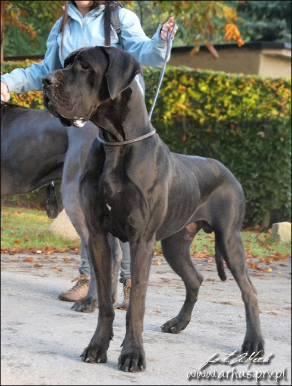

20.11.2011 - Miêdzynarodowa wystawa
w Kielcach i kolejne sukcesy Nash'a czyli HEARTBREAKER - CAC, CACIB, BOB
MICHELLE MA BELLE - CAC, Res.CACIB
debiutuj¹cy GUNS N' ROSES - Best Baby
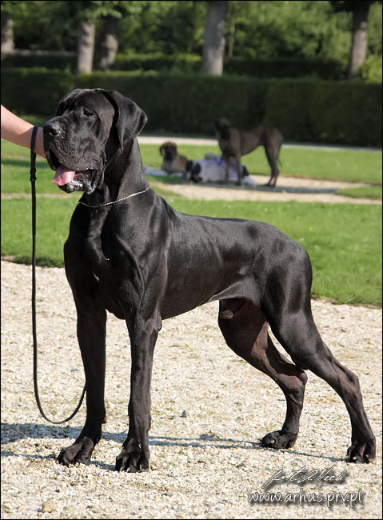
JAROD Balao - V 4
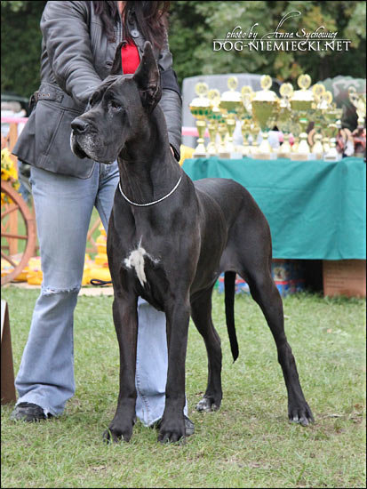
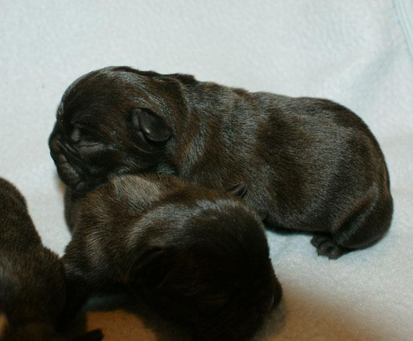
M: Ch.Md., Ch. Bg., Grand
Ch.Bg NOIR NOTE Balao
O: rozpczêty M³.Ch.Pl., Ch.Pl oraz Int.Ch. ELWIN Baflo
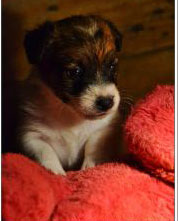
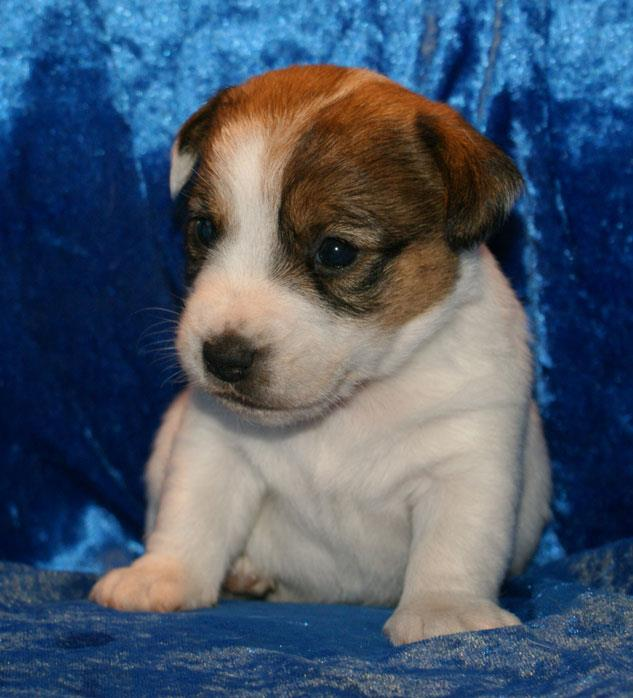
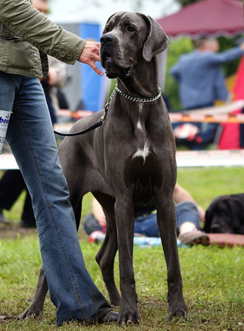
II BOG
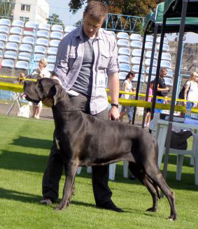
 01
- 06.08.2011 - Spêdziliœmy niezapomniany tydzieñ w Albenie, gdzie co
roku organizowany jest wystawowy maraton. Nasze psy spe³ni³y wszystkie
warunki do uzyskania championatów, Gruzji, Mo³dawii, Bu³garii oraz grand
championatu Bu³garii. Buldo¿ka francuska NOIR NOTE Balao uzyska³a te¿
nominacjê na Cruft.
01
- 06.08.2011 - Spêdziliœmy niezapomniany tydzieñ w Albenie, gdzie co
roku organizowany jest wystawowy maraton. Nasze psy spe³ni³y wszystkie
warunki do uzyskania championatów, Gruzji, Mo³dawii, Bu³garii oraz grand
championatu Bu³garii. Buldo¿ka francuska NOIR NOTE Balao uzyska³a te¿
nominacjê na Cruft.
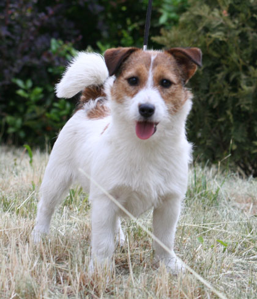
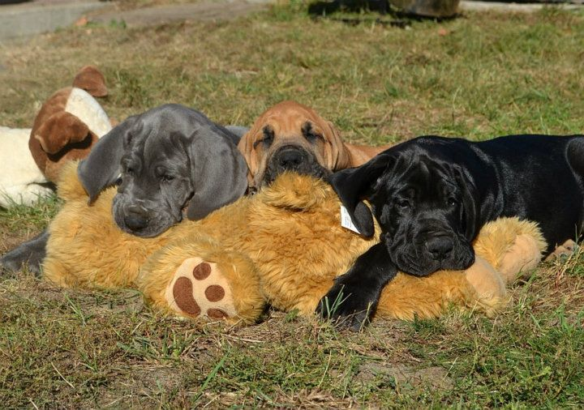
17.07.2011 - Miêdzynarodowa wystawa w Warszawie - FOR YOU BALAO Magor - CAC, CACIB, BOB
22.05.2011 - Krajowa wystawa w Radomiu - FOR YOU BALAO Magor ponownie CAC, BOS, BOB. TIME FOR PLEASURE Balao - JCAC, Best Junior
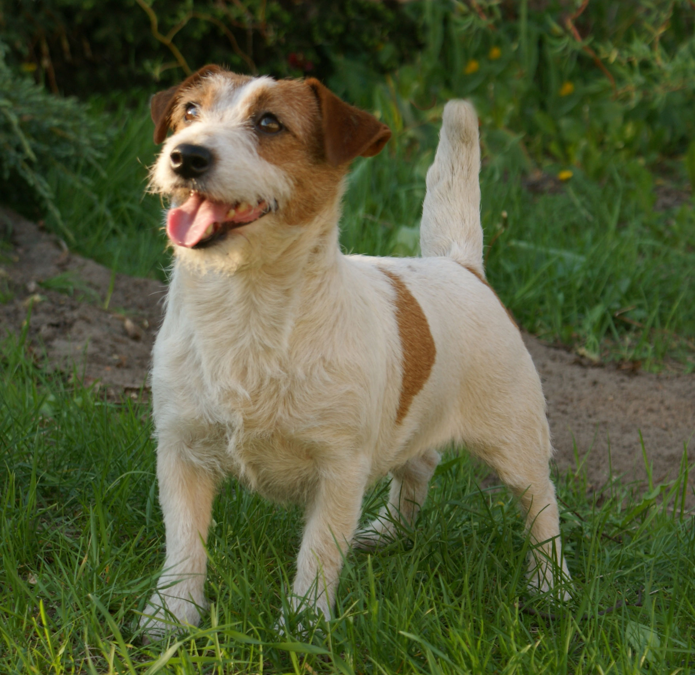
.
 08.05.2011
- Miêdzynarodowa wystawa w £odzi - JAROD Balao - CAC, CACIB i kolejne
BOB :)
08.05.2011
- Miêdzynarodowa wystawa w £odzi - JAROD Balao - CAC, CACIB i kolejne
BOB :)
07.05.2011 - Miêdzynarodowa wystawa w £odzi - JADE Balao, jak zwykle niepokonana, kolejny CACIB i BOB
 17.04.2011
- Krajowa wystawa w Lublinie - tydzieñ po Jarodzie równie¿ KALOO
LILIROSE Balao ukoñczy³a championat Polski :)
17.04.2011
- Krajowa wystawa w Lublinie - tydzieñ po Jarodzie równie¿ KALOO
LILIROSE Balao ukoñczy³a championat Polski :)
 09.04.2011
- Krajowa wystawa w Nowym Dworze Mazowieckim - JAROD Balao uzyska³
ostatni wniosek CAC potrzebny do ukoñczenia championatu Polski, oraz BOS
i BOB !
09.04.2011
- Krajowa wystawa w Nowym Dworze Mazowieckim - JAROD Balao uzyska³
ostatni wniosek CAC potrzebny do ukoñczenia championatu Polski, oraz BOS
i BOB !
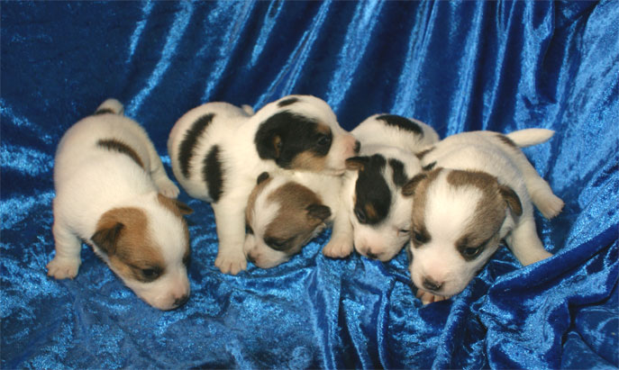
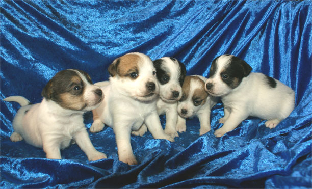
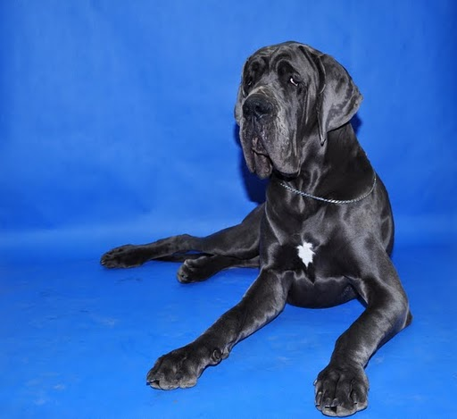
JAROD Balao, CAC, BOS,
BOB